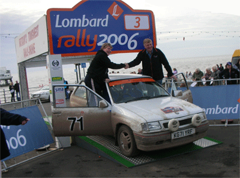

Comments (0) Sunday, 31st December, 2006, 01:08 - Merry Christmas
Merry Christmas Everyone!
And best wishes for a healthy and happy 2007.
Comments (0) Wednesday, 6th December, 2006, 00:10 - Another year wiser
So I turned 27 last week. That's mid-twenties, which is almost 30. But not quite. And still not old enough
to play as a veteran in Badminton tournaments  (Sorry Nicolette!)
(Sorry Nicolette!)
I spent my birthday with my parents, who came down for the evening and took me out for a lovely dinner in
Southampton. I chose the obvious option from the menu... the one that came with a rich dark chocolate sauce
Thank you to everyone
who sent me birthday presents. I'll thank you personally soon, as soon as I finish the Christmas cards to
include the thank you letters in 
Not long now until Christmas, only 20 days to go! And I've got no Christmas presents yet. No worries, plenty
of time yet...
Comments (0) Sunday, 26th November, 2006, 23:11 - Happy Thanksgiving!
This weekend Mark, Audrey and Steven came down to stay and we cooked a Thanksgiving dinner. I've never done
Thanksgiving before, I had to peruse t'Internet to learn all about it before the weekend so I knew what we
were celebrating! If you want to learn all about Thanksgiving, here's a good website: www.holidays.net/thanksgiving
We cooked all the standard dishes, North Carolina style (where Audrey is from) and it took ages! But it was
well worth it.
Our meal consisted of:
- Turkey (of course, although we cheated and bought slices of ready-roasted turkey rather than cooking a
whole bird)
- Cranberry sauce
- Sweet potato casserole (like a crumble, too sweet and delicious to be allowed as a main course!)
- Cornbread casserole (a sweetcorn/cornmeal concoction that turned into a sort of bread-like dish, very
tasty)
- Mashed potato
- Grilled green beans
- Sage & onion stuffing (traditional this should be Oyster stuffing, but we cut a few corners here)
And for dessert:
- Pumpkin pie
- Squirty cream
Yum!
I still can't move, I ate so much!
Comments (0) Friday, 17th November, 2006, 00:17 - Moneypit
My lovely car is sadly costing me a fortune at the moment, both in terms of money and stress.
In August the rear silencer fell off  - it had rusted through, yet the car was only 2 and a
half years old! I had it replaced by Renault (at great cost), and after writing a letter they finally
refunded me the money as it is still in warranty (it's 3 years old at the end of this month).
- it had rusted through, yet the car was only 2 and a
half years old! I had it replaced by Renault (at great cost), and after writing a letter they finally
refunded me the money as it is still in warranty (it's 3 years old at the end of this month).
Then a few weeks ago it fell off again  - this time the bit they had connected it to
rusted through. So fortunately Renault replaced the centre section, at their cost. However they didn't
replace the rubber bracket that it suspends from, which 2 days later perished and collapsed (more on that in
a bit).
- this time the bit they had connected it to
rusted through. So fortunately Renault replaced the centre section, at their cost. However they didn't
replace the rubber bracket that it suspends from, which 2 days later perished and collapsed (more on that in
a bit).
On top of all this, the car needs new brake discs and pads all round. After getting a quote from Renault to
get the front ones done, I decided I couldn't afford to remortgage, so I took the car back home and Dad
& I replaced the front ones last weekend; the next ones will be done this weekend.
While taking the wheels off to do the job, we found two tyres with nails in. We removed one and the tyre was
fine. However, the second one left a hole and the tyre went down. The problem here was that the car doesn't
have a spare. As it is the Cup edition, i.e. the lighter version for track days, Renault decided the spare
wheel was something that could be dispensed with, and replaced it instead with two cans of tyre mousse. So
we had no choice but to use the tyre mousse to re-inflate the tyre and seal the hole.
And herein lay the next problem. The tyre mousse didn't work... Neither did it inflate the tyre nor seal the
hole. And it was 3.30pm on a Sunday afternoon. We rushed to Kwik Fit and Halfords to get advice on tyre
mousse before they shut (does it have an expiry date? is it a permanent fix?), but no-one knew anything
about it. So we called my uncle, who very kindly offered me the use of the spare wheel from his Clio Sport
to get me back down to Southampton ready for work on Monday morning.
On Monday I took my deflated tyre to the garage to get it repaired. However, as soon as I mentioned that I
had put tyre mousse in there, they said they couldn't repair it, as the mousse would stop the glue from
bonding with the tyre. So that cost me a tyre.
So I'm back on the road now, with the exhaust held in place by a bit of rubber found in the depths of Dad's
garage, secured by a tie wrap (the only place I can get a replacement bracket is from the main dealer, i.e.
Renault and I dread to think how much they'll charge for a bit of rubber  ).
).
As the car reaches it's 3rd birthday in 2 weeks (the day before my birthday!) it is due it's first MoT. And
guess what - the price of an MoT went up by 6 quid last week - d'oh! And I ought to get it serviced by
Renault before the warranty expires, just in case anything else is about to wear out on it, heaven forbid.
And that doesn't come cheap... 
Anyone got any jobs going? Or a winning lottery ticket??? If the car wasn't so stunningly gorgeous or fun to
drive, I'd have put the ads up by now... any takers?
Comments (0) Friday, 10th November, 2006, 00:38 - Runners up!
Heather and I entered a badminton tournament in Essex last weekend. We haven't played together for over 4
years, and we came runners up! I was most impressed, and it was a pleasure to play with her again - despite
the long gap in playing together, we didn't bump into each other once! We're hoping to enter the Middlesex
one in February next, I wonder if we'll do as well then.
My housemate Emily has moved out  It's strange not having her around, the house is quite
untidy! I hope we keep in touch, we got on really well in the 3 months she was here. She's living in
Southsea now, much closer to where she works and her colleagues live. I hope she's happy in her new house,
and gets used to sharing with 3 people again!
It's strange not having her around, the house is quite
untidy! I hope we keep in touch, we got on really well in the 3 months she was here. She's living in
Southsea now, much closer to where she works and her colleagues live. I hope she's happy in her new house,
and gets used to sharing with 3 people again!
I'm looking forward to a weekend off this weekend, no plans... I need sleep! I'm still recovering from the
Revivial Rally, my cold is lingering on.
Comments (2) Thursday, 2nd November, 2006, 23:53 - Lombard Revival Rally
Dad & I did the Lombard Revival Rally last weekend, a 4 day endurance rally (www.endurorally.com) for cars up to 1400cc. We
started in York on Thursday, drove out to and stayed in Scarborough on Thursday night, then started bright
and early on Friday for our first full day. This took us up through the Yorkshire Dales and Moors, via
Kielder Forest (an old favourite of the original Lombard RAC Rally) to Carlisle where we stopped for 2
nights. Day 3 was a loop up into Scotland and back, ready for a final stint down to Blackpool, finishing on
Blackpool promenade on Sunday afternoon.

After 2 selectifs and a navigational section on Thursday night, we were lying 32 out of 125 starters which
wasn't bad considering I haven't done anything like this before. Leg 2 on Friday started well, and by the
end of it I was finally getting to grips with the diagrams and text I was given to direct Dad through the
selectifs. We cleaned the day and finished the leg in 19th position, which was bloomin' marvellous by my
estimations!
Leg 3 started early on Saturday as we were re-seeded based on the positions after Leg 1, and again we
cleaned the day and finished in 20th position overall. Sunday saw us re-seeded again to 18th on the road,
but this is where it all went wrong. A combination of fatigue and a stinking cold which meant I was losing
my voice led me to call a chicane wrong on the first selectif of the day - we managed to stop, back up and
get it right, but we lost at least 20s in doing so. We also somehow clipped a cone (we reckon we threw up a
rock which knocked it over, we were no-where near!) which meant a 5s penalty so our clean run came to an
end.
That knocked our concentration a bit, and on the next selectif I didn't get all 7 letters from a code board,
which incurred a 1 minute penalty. That threw me completely, and I lost my place in the stage and nearly
missed a split which took us on a second lap of the stage. The next two stages saw us go the wrong side of a
cone and go straight on into the grass over a crest as we saw the gap in the fence we were supposed to take
on our right whizz past! At this point we knew we'd plummeted down the leaderboard (and more importantly
friends who started the day 9s behind us had definitely leapfrogged us) so we were surprised to find out
later that we got 18th fastest time on the penultimate selectif! The last test saw us navigate chicanes
along Blackpool promenade, and in wanting to put on a show for the crowds Dad tried to handbrake it round
the hairpin halfway along, but the concrete was far too grippy and we ended up facing the wall and stalling
the engine! We stormed over the finish line to finish 4 days of gruelling rallying to see Mum waving her
flag vigorously at the barrier, and half of Blackpool around her cheering us on! I was allowed to drive the
car onto the finish ramp, where we had our photo taken before we could proceed to the hotel at the finish
and finally collapse into bed.

To round the event off there was an awards dinner and presentation at the hotel on Sunday evening which we
duly attended to congratulate fellow CSMA members on various awards (1st in Class 4 for Mike Biss & Cath
Woodman, Best Lady for Cath, a team award for the CSMA North West London crews...). We were clapping away
merrily when they announced the winners of the Tony Fowkes award to the highest placed competitors on their
first rally - and the award goes to.... Malcolm Grubb and Caroline Grubb! Oh my god! That's us! But Dad's
done this before... ah well, there's not much we can do now, everyone's looking at us and clapping... we'd
better dgo up! So we collect our trophies, have our photo taken again and sit down looking a bit bewildered!
We weren't expecting that at all...

Our final classification was 23rd overall, 11th in Class 3 (1301-1400cc cars prior to 2000) out of 85
finishers in total. Which ain't bad really, even if I do say so myself 
So all that remains is to repair the exhaust on the Nova (it disappeared somewhere in a forest in Scotland)
and for Dad to decide if he's going to sell it or keep it so Steven and I can enter the event next year. I'd
better start saving...
Comments (0) Thursday, 21st September, 2006, 15:21 - Whole again
I had keyhole surgery on my knee 2 weeks ago, and now I'm back at work  I went in expecting
them to remove a lump I have on my knee (it pops out the side of my knee when I walk - it makes a great
party trick!), but it's still there
I went in expecting
them to remove a lump I have on my knee (it pops out the side of my knee when I walk - it makes a great
party trick!), but it's still there  I'm very confused. One consultant booked me in for
surgery to have it removed, but when I got there the consultant who was going to do the op assessed me then
said 'Oh no, I'm not interested in the lump, that's outside the knee, I'm looking inside the knee.' I didn't
see him again after the op, so it wasn't until I saw the physio a week later that I found out all he'd done
was an exploration of my knee joint (and found the cartilage on the back of my knee cap is slightly
inflamed)... no mention of the lump. So now I've got to wait 6 weeks until everything is healed up so I can
go back and see him again. Grrr!
I'm very confused. One consultant booked me in for
surgery to have it removed, but when I got there the consultant who was going to do the op assessed me then
said 'Oh no, I'm not interested in the lump, that's outside the knee, I'm looking inside the knee.' I didn't
see him again after the op, so it wasn't until I saw the physio a week later that I found out all he'd done
was an exploration of my knee joint (and found the cartilage on the back of my knee cap is slightly
inflamed)... no mention of the lump. So now I've got to wait 6 weeks until everything is healed up so I can
go back and see him again. Grrr!
And all that has screwed my badminton - it's the start of the season and I've got to wait another couple of
weeks until I can start playing again! But I guess I did get two weeks off work, which was rather nice...
Comments (2) Sunday, 20th August, 2006, 23:07 - Summer over
My first weekend at home in aaaages, it's been lovely! Met my housemate and her friend in town for a drink
last night, and ended up staying up v. late chatting - it's so nice to have company in the house again.
The 2006 wedding season is now over, for me at least. Pics of Kate & Andy's wedding last weekend are
online at Photobox, click here to see them: Kate &
Andy's Wedding
I'm not impressed with my car - it's not quite 3 years old and the exhaust has rusted and fallen off
already. I heard it starting to blow on Friday and booked it in to the garage for Tuesday, but now it's
sheared off completely (I blame the bumpy roads in Southampton). I am now quite familiar with the underside
of my car!
Comments (0) Sunday, 2nd July, 2006, 19:46 - Busy summer
Well I'm about halfway through my hectic summer schedule now. Christmas Dinner (in June, yes, I know) -
tick, Gemma's Hen Weekend - tick, holiday in Spain (complete with sunburn) - tick, Gemma & Dan's Wedding
and trip to the Lake District - tick! Just one more hen weekend and wedding to go (my 5th and final wedding
for this year), then I can put the confetti away.
Photos of Gemma & Dan's wedding (1st July 2006, Lancaster/Windermere) are now up on Photobox - click
this link to see them: Gemma & Dan's Wedding
Comments (0) Monday, 13th March, 2006, 10:52 - New Car!
After 5 years of loyal service from my little red Saxo, I've finally traded it in. I now have an awesome
Renault Clio 172 which is just too much fun  It's the Cup version which is
designed for track days etc, so a lot of the frills (e.g. Air Con, the spare wheel!) are stripped out to
make it lighter. But even with three people in it goes like stink! I can't wait to get it to Castle Combe to
really see what it can do, and to compare it to my uncle's standard 172
It's the Cup version which is
designed for track days etc, so a lot of the frills (e.g. Air Con, the spare wheel!) are stripped out to
make it lighter. But even with three people in it goes like stink! I can't wait to get it to Castle Combe to
really see what it can do, and to compare it to my uncle's standard 172